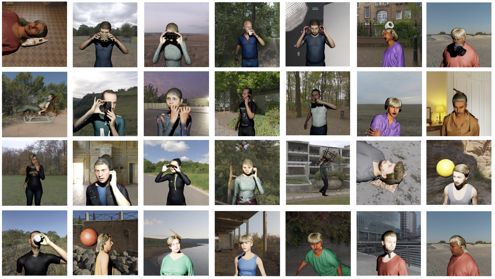
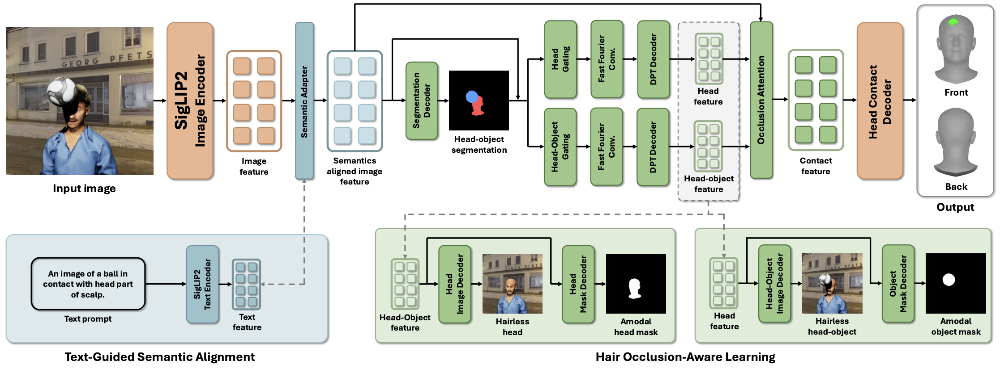
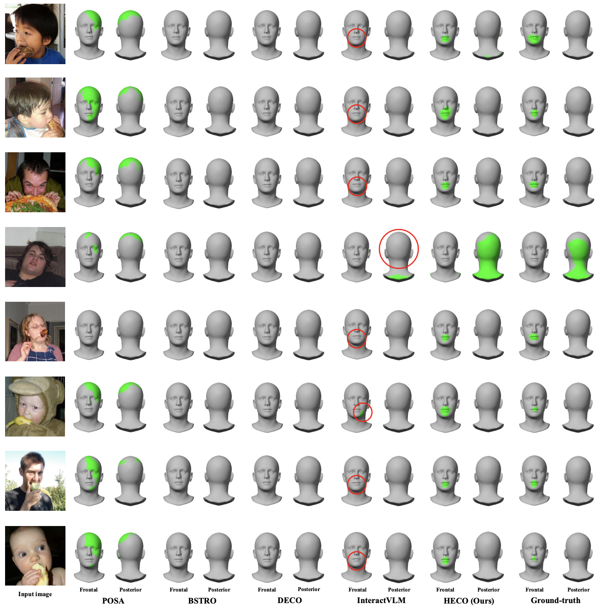

Head serves a critical role in human cognitive and perceptual functions while remaining vulnerable to external impacts, making the understanding of head contact essential for human safety. Despite its importance, dense head-object contact estimation remains largely unexplored, primarily due to the absence of head-object contact data. Recently, it has been shown that synthetic data can serve as powerful training data in limited data scenario, implying the potential of synthetic data in head-object contact estimation. There are two core challenges for dense head-object contact estimation. First, head-object interactions are highly diverse, resulting in substantial variations in contact regions and patterns across different objects and interaction types. Second, head contact regions are often heavily occluded by hair, making direct visual observation of the actual contact regions difficult. To address these issues, we introduce HEad COntact estimation (HECO) with synthetic data. To handle diverse head-object interactions, we leverage semantic context from text features that encode semantic relationships between head regions and interacting objects. To resolve hair occlusion issue of actual head contact regions, we introduce occlusion-aware contact learning that learns to infer head contact beyond visible information from images via amodal inpainting. As a result, we enable head-object contact estimation with HECO trained with our synthetic dataset, overcoming the issue of absence of contact data. The codes will be released.
We construct a dataset that contains diverse 3D head–object interactions with wide range of object categories.

Our method encodes image and text prompt with SigLIP2 encoders to build image feature and text feature. After semantic alignment, semantics aligned image feature is used for head-object segmentation that gates the aligned image feature to build head feature and head-object feature which learn hair occlusion through hairless image reconstruction and amodal mask prediction. The head feature, head-object feature, and the aligned image feature passes occlusion attention to build contact feature which is used by head contact decoder to predict final dense head contact.


There's a lot of excellent works that we wish to share.
Learning Dense Hand Contact Estimation from Imbalanced Data.
Shoe Style-Invariant and Ground-Aware Learning for Dense Foot Contact Estimation.
Resolution-robust Large Mask Inpainting with Fourier Convolutions.
@article{jung2026heco,
title={Learning Dense Head-Object Contact Estimation with Synthetic Data},
author={Jung, Daniel Sungho and Lee, Kyoung Mu},
journal={arXiv preprint arXiv:2611.30751},
year={2026}
}